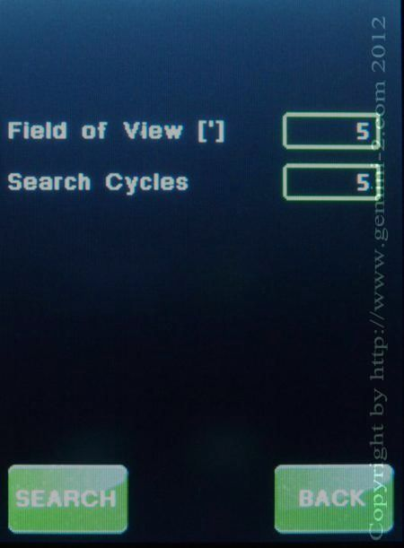

| Interactive Hand-Controller Menus - click on green button to Navigate |
|
 |
This menu allows you to hunt around the area where the mount is pointing. The field of view is in arc minutes, and the search cycles is how many times the mount will make a circle at the arc minutes of deviation from center. Press any of the 4 direction buttons to stop the search at where it is positioned. At the end of the specified number of cycles, the mount will return to the original position. |